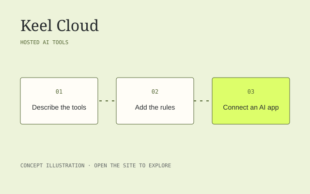

From planning a holiday to running the AI behind it. See what each idea does, why it matters and who it helps.
Built by Rimon R for Travellabs
The ideas, in plain English
Explore nine business ideas and proposed services. Previews illustrate the concepts; outcomes are intended benefits, not measured results.
Keel Cloud01 / 09

Concept illustration
Keel CloudProposed cloud service
Give AI useful tools. Let us look after the hosting.
For software teams
What
A proposed hosted service for the keel toolkit. It connects AI apps to business tools, applies permission rules and keeps those tools running for the team.
Why
Building tools is only part of the job. Businesses also need hosting, updates, access controls and records of what happened.
Outcome
Less infrastructure to manage, reusable tools and more control over what AI assistants can do.
For example
A business connects its booking system and help desk. The AI can look up a trip, but must ask a person before changing it.
Keel Cloud is a proposed paid service built on the open-source keel toolkit. Cloud pricing is indicative.
A travel helper that remembers you—and looks for savings.
For travellers
What
An app that turns saved videos, places and booking emails into a trip. It finds member prices, books with approval and watches for eligible price drops.
Why
Planning means juggling apps, emails and tabs. Most booking sites stop helping once the purchase is done.
Outcome
Less effort to plan, choices that fit the traveller and possible savings before and after booking.
For example
Save a Tokyo food video. ctx adds the place to your plan, finds a nearby hotel and keeps checking its price.
Savings depend on availability and booking rules; a stated share of price-drop savings goes to ctx.
An assistant for every advisor. Care for every trip.
For travel advisors
What
Customer records and trip management in one place. A personal AI agent remembers each client, prepares their trip, books with approval and keeps watching for changes.
Why
Enquiries, notes and bookings sit in different places. Advisors lose time copying details and chasing the next task.
Outcome
Less admin, more time with customers and a clearer view of every trip from first enquiry to home again.
For example
Maya asks for a quiet beach break. Her agent remembers what she likes, prepares a trip and asks the advisor to approve it.
The agent works within the advisor’s rules and asks before booking or payment.
Reach the suppliers that still book by website or message.
For agencies + small operators
What
A booking helper that uses supplier websites with permission. For operators without a system, it can arrange a booking by message or phone and keep a tidy record.
Why
Staff often type the same names again, chase a reply and copy a confirmation into another system.
Outcome
Less repeated work and more local suppliers available to sell, without asking each operator to buy new software.
For example
A boat operator takes bookings on WhatsApp. The helper asks for two seats and records the operator’s confirmation.
Supplier permission comes first. A person approves spending.
Get the paperwork ready before the traveller leaves.
For travel teams
What
An AI helper checks which visas and entry papers a trip needs, prepares forms and tracks the application. A trained person reviews it before it is sent.
Why
A booked flight does not mean a traveller has permission to enter. Finding missing papers late can put the whole trip at risk.
Outcome
Less form-filling for teams, clearer next steps for travellers and fewer last-minute paperwork surprises.
For example
A photo is missing from an application. The helper flags it early, so the traveller can supply it before the review.
Governments decide on visas and entry. Approval cannot be guaranteed.